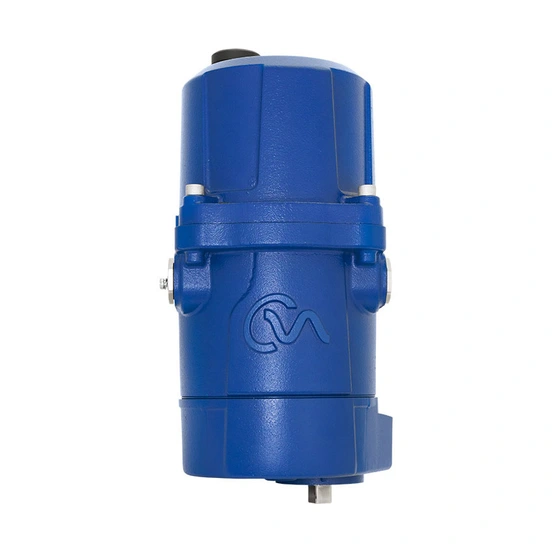

Rủi ro lớn nhất khi mua actuator không phải là giá, mà là chọn sai cấu hình rồi phát hiện sau khi hàng đã về công trường. Actuator Rotork có nhiều range (IQ3 Pro, IQT3 Pro, CK, CMA, Skilmatic SI...) với cách chọn khác nhau theo loại chuyển động, tải trọng và môi trường lắp đặt. Bài viết này là checklist thực tế dành cho người mua hàng và kỹ sư dự án tại Việt Nam, giúp chuẩn bị đủ dữ liệu trước khi gửi yêu cầu báo giá, giảm số lần trao đổi qua lại với nhà cung cấp.

Trả lời nhanh
- Chuẩn bị 10 nhóm dữ liệu trước khi hỏi giá: ứng dụng, loại van, output/torque-thrust, duty cycle, nguồn điện/tín hiệu điều khiển, môi trường lắp đặt, chứng nhận, mounting, số lượng và hồ sơ cần kèm.
- Không chọn actuator chỉ theo tên range; range như IQ3 Pro hay CMA còn chia nhiều model theo tải trọng và kiểu chuyển động.
- Yêu cầu hồ sơ (CO/CQ, catalogue, datasheet) nên nêu rõ ngay từ đầu, vì được xác nhận theo từng lô hàng, không mặc định có sẵn cho mọi đơn.
- Fast Group Engineering hỗ trợ đối chiếu model/part number dựa trên dữ liệu ứng dụng và ảnh nameplate (nếu là hàng thay thế).
Checklist 10 bước trước khi đặt hàng
| # | Nhóm dữ liệu | Cụ thể cần xác định |
|---|---|---|
| 1 | Ứng dụng | Van mới hay thay thế actuator cũ; loại van (bi, bướm, cổng, cầu, damper); vị trí trong hệ thống |
| 2 | Loại chuyển động | Multi-turn (đa vòng), part-turn (quay góc, thường 90°) hay linear (tuyến tính) |
| 3 | Output cần thiết | Torque hoặc thrust yêu cầu tại vị trí đóng/mở, có biên an toàn theo khuyến nghị nhà sản xuất van |
| 4 | Duty cycle | Đóng/mở theo lịch (isolating), điều tiết liên tục (modulating) hay có yêu cầu fail-safe/ESD |
| 5 | Nguồn điện và tín hiệu | Điện áp, pha, tần số; tín hiệu điều khiển analog/digital/fieldbus nếu có hệ thống điều khiển trung tâm |
| 6 | Môi trường lắp đặt | Nhiệt độ, độ ẩm, ngoài trời/trong nhà, ăn mòn, ngập nước theo yêu cầu IP |
| 7 | Chứng nhận | Vùng nguy hiểm (Ex), SIL/SIS nếu là ứng dụng an toàn, tiêu chuẩn ngành áp dụng |
| 8 | Mounting/kết nối | Kiểu mặt bích kết nối với van, hướng lắp đặt, không gian thi công thực tế |
| 9 | Số lượng và tiến độ | Số lượng từng cấu hình, thời điểm cần hàng, địa điểm giao |
| 10 | Hồ sơ cần kèm | CO, CQ/certificate, catalogue, datasheet, packing list — nêu rõ loại hồ sơ ngay khi hỏi giá |
Chọn nhóm actuator theo nhu cầu
| Nhu cầu | Nhóm actuator liên quan | Đặc điểm cần lưu ý khi chọn |
|---|---|---|
| Đóng/mở van công nghiệp, cần dữ liệu vận hành số hóa | IQ3 Pro (multi-turn), IQT3 Pro (part-turn) | Torque trực tiếp 14–3.000 Nm tùy biến thể; có data logger và cấu hình không cần mở nắp |
| Hệ thống cũ đã lắp CK Range, cần phụ tùng hoặc mở rộng | CK Range | Một số tài liệu CK hiện có trong thư viện kỹ thuật là bản superseded; cần xác nhận tài liệu hiện hành trước khi chốt thông số |
| Điều tiết liên tục, yêu cầu độ chính xác vị trí cao | CMA (CML linear, CMQ part-turn, CMR multi-turn) | Độ chính xác vị trí tới 0,1%; phù hợp ứng dụng modulating liên tục (S9/Class D) |
| Van an toàn, ESD, yêu cầu fail-safe theo SIL | Skilmatic SI (SI3, SI4) | SI3 torque 75–36.000 Nm, SI4 tới 200.000 Nm; có chức năng ESD và Partial Stroke Testing (PST) |
Đây là bảng định hướng ban đầu, không thay thế bước xác nhận model/part number cụ thể. Với actuator thay thế, nên đọc thêm bài cách đọc nameplate Rotork trước khi gửi yêu cầu báo giá.
Rủi ro thường gặp khi chọn sai
- Chọn theo tên range mà không xác định model/kích cỡ → báo giá sai tải trọng, phải đổi hàng sau khi đặt.
- Bỏ qua yêu cầu chứng nhận vùng nguy hiểm → actuator không lắp được vào khu vực Ex đã quy hoạch.
- Không nêu rõ yêu cầu hồ sơ khi hỏi giá → phát sinh chậm trễ vì phải xin bổ sung CO/CQ sau khi đã chốt đơn.
- Giả định "thay thế tương đương 100%" cho actuator cũ mà chưa kiểm tra lại cơ khí, điện, logic điều khiển và chứng nhận.
Model và range liên quan
| Model/range | Lý do liên quan | Trang sản phẩm |
|---|---|---|
| IQ3 Pro | Lựa chọn phổ biến cho multi-turn, có trong checklist chọn nhóm | IQ3 Pro Rotork |
| IQT3 Pro | Phiên bản part-turn cùng nền tảng IQ3 Pro | IQT3 Pro cho van part-turn |
| CMA | Lựa chọn cho ứng dụng modulating chính xác | CMA Rotork |
| Skilmatic SI | Lựa chọn cho ứng dụng fail-safe/ESD | Skilmatic SI Rotork |
Quy trình đặt hàng qua Fast Group Engineering
Fast Group Engineering phân phối và cung cấp sản phẩm Rotork chính hãng tại Việt Nam. Sau khi nhận checklist trên, đội ngũ kỹ thuật đối chiếu ứng dụng với model/part number phù hợp, xác nhận hồ sơ có thể cung cấp theo lô hàng cụ thể trước khi báo giá chính thức. Catalogue, datasheet, CO/CQ, packing list và hồ sơ liên quan được kiểm tra, xác nhận theo từng sản phẩm, cấu hình và lô hàng — không cam kết sẵn có cho mọi đơn.
Câu hỏi thường gặp
Fast Group Engineering có phải đại lý chính thức của Rotork không?
Fast Group Engineering phân phối và cung cấp sản phẩm Rotork chính hãng tại Việt Nam. Các danh xưng như đại lý chính thức hoặc nhà phân phối ủy quyền chỉ được công bố khi có văn bản chứng minh còn hiệu lực.
Mua actuator Rotork chính hãng có luôn kèm đủ CO/CQ không?
CO/CQ và hồ sơ liên quan được kiểm tra, xác nhận theo từng sản phẩm, cấu hình và lô hàng cụ thể, không cam kết chung cho mọi đơn hàng. Khách hàng nên nêu rõ yêu cầu hồ sơ ngay khi gửi yêu cầu báo giá.
Không biết chính xác model, chỉ có mô tả van thì có đặt hàng được không?
Có thể bắt đầu bằng mô tả ứng dụng và thông số van, nhưng cần thêm dữ liệu vận hành (torque/thrust, duty, môi trường) để xác định đúng model trước khi chốt part number và báo giá.
Actuator Rotork có phải hàng sản xuất tại Đức không?
Không. Rotork là thương hiệu có nguồn gốc tại Vương quốc Anh. Nơi sản xuất thực tế của một lô hàng cụ thể phải căn cứ theo Certificate of Origin (CO) đi kèm lô đó, không suy đoán theo thương hiệu.
Gửi checklist để nhận báo giá
Để kiểm tra đúng mã, vui lòng gửi ảnh nameplate rõ nét (nếu là hàng thay thế), part number hoặc BOM, số lượng, điện áp/tín hiệu điều khiển, loại van và điều kiện vận hành cho Fast Group Engineering qua Zalo/điện thoại (+84) 938 888 958 hoặc email minhduc@fastgroup.vn.
Nguồn tham khảo
- PUB002-407-00, IQ3 Pro Range Flyer, Issue 05/26 — trang 2 (dải torque IQ3 Pro/IQT3 Pro).
- PUB094-036-00, CMA Range Flyer, Issue 05/26 — trang 1 (tính năng), trang 2 (dải tải trọng CML/CMQ/CMR).
- PUB021-064, Skilmatic SI Range Brochure — trang 6 (torque SI3/SI4), trang 8–9 theo mục lục (ESD, PST).
- PUB021-062, Skilmatic SI range – Product datasheet — trang 3 (phạm vi SI3/SI4).
- 03_PUB111-103 (CK Range Superseded Specification): dùng để lưu ý CK Range hiện có tài liệu superseded trong thư viện, chưa dùng để chốt thông số trong bài này.